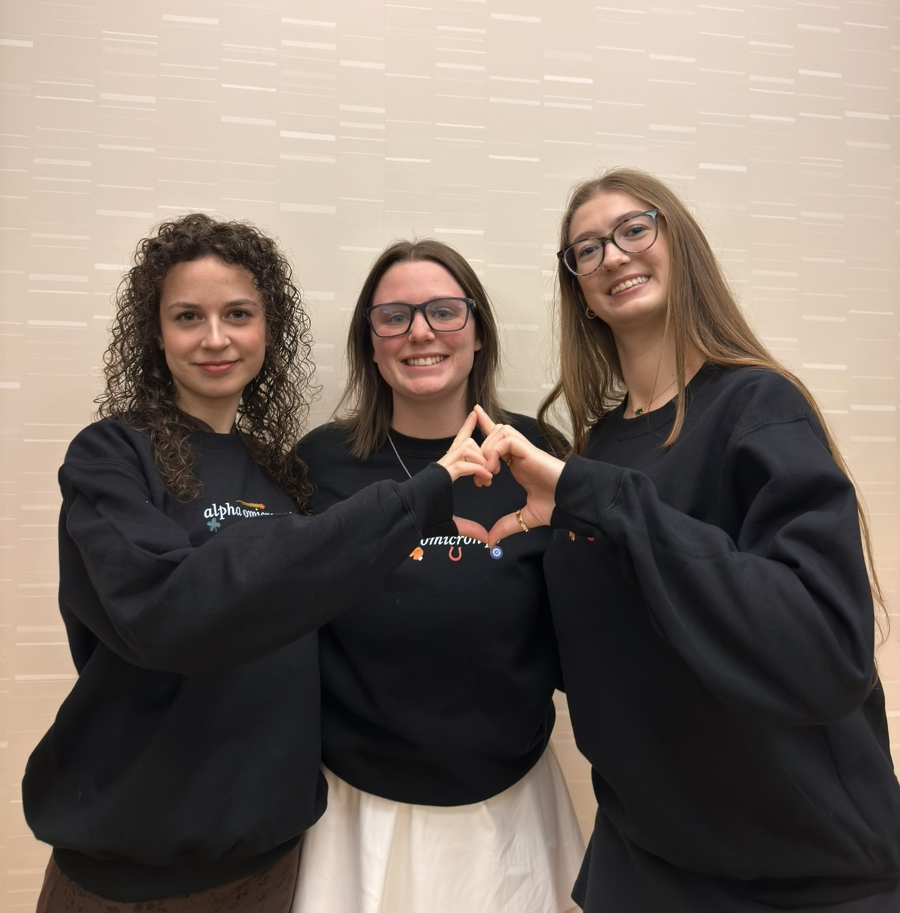

Pokémon
Collecting Pokémon cards, organizing my Pokédex binder, and embracing my love for all things Pokémon.
Developer, dreamer, and a work in progress. ♡
I'm Kalli, a Computer Science graduate and Cybersecurity master's student at Wright State University with a passion for technology, creativity, and continuous learning.
I love building software, exploring new technologies, and finding ways to make everyday things a little easier through code. I'm especially interested in software development, automation, and cybersecurity.
Beyond technology, I'm passionate about leadership, personal growth, and creating meaningful connections with the people around me.
When I'm not behind a keyboard, you can usually find me collecting Pokémon cards, listening to music, reading, or finding a new creative project to start.
“I aim to lead with empathy and intention. Uplifting others while continuously growing into the most authentic and impactful version of myself.”♡
A few little things that make me, me.
Collecting Pokémon cards, organizing my Pokédex binder, and embracing my love for all things Pokémon.
Finding the perfect song for every mood and always having something playing in the background.
Exploring new tools, building personal projects, and turning random ideas into something real.
Getting lost in a good story and discovering new worlds, characters, and perspectives.
Designing, crafting, and finding little ways to express myself through creative projects.
An avid Apple enthusiast who loves thoughtful design, technology, and the Apple ecosystem.
A collection of moments, memories, and things that make me happy. ♡


